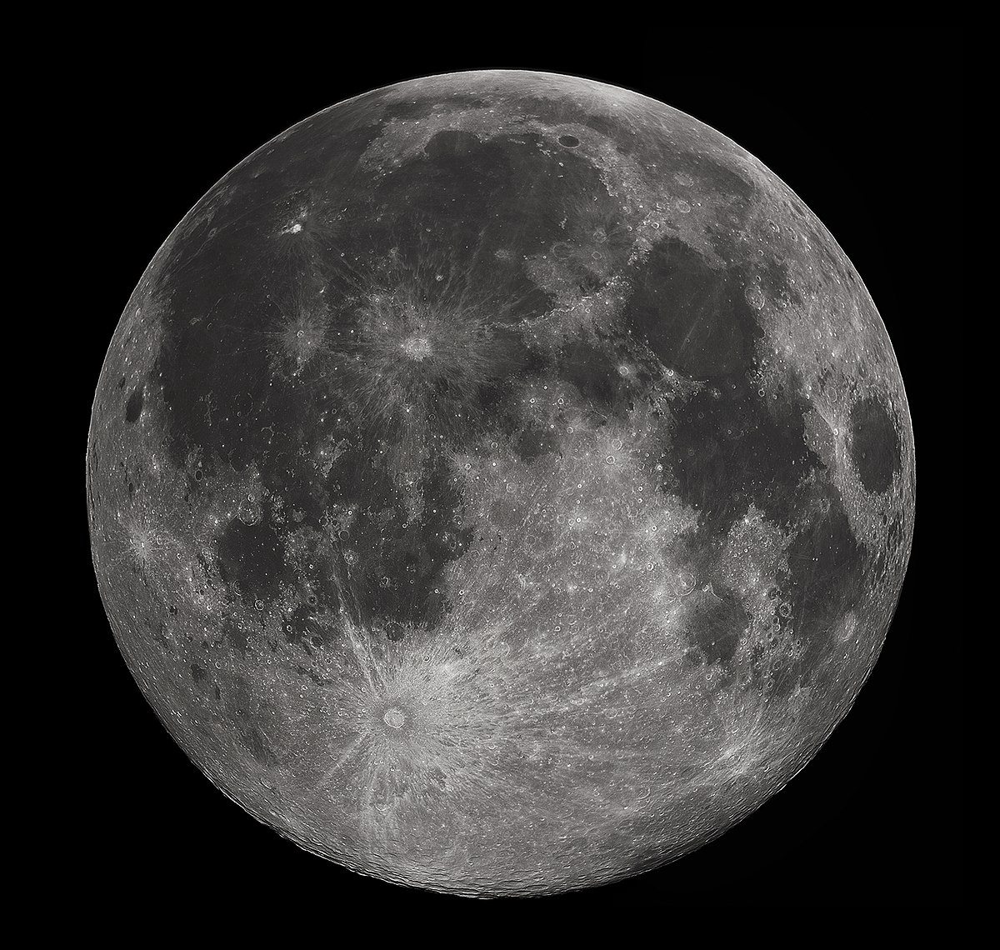
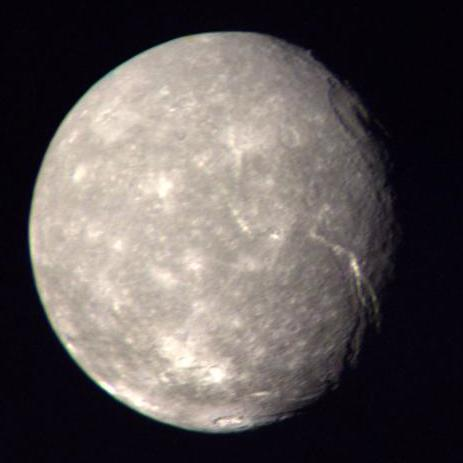

Pavadoņi
Lai gan planētas pašas par sevi ir aizraujošas, pavadoņi, kas riņķo ap tām, ir tikpat interesanti. Šajā sadaļā mēs izpētīsim dažādus mūsu Saules sistēmas pavadoņus un to, kas padara tos unikālus.
Zemes pavadonis
Mēness ir vienīgais Zemes dabiskais pavadonis un piektais lielākais mēness Saules sistēmā. Tā diametrs ir 3474 kilometri, un tas ir aptuveni ceturtdaļa no Zemes izmēra. Mēness ir arī vienīgā vieta ārpus Zemes, kur cilvēki spēruši kāju, un pirmā Mēness nolaišanās notika 1969. gadā.
Jupitera pavadoņi
Jupiteram ir visvairāk pavadoņu no visām Saules sistēmas planētām, un 2023. gadā ir zināmi 95 pavadoņi. Četrus lielākos pavadoņus, kas pazīstami kā Galilejas pavadoņi, atklāja Galileo Galilejs 1610. gadā. Šie pavadoņi ir Io, Eiropa, Ganimēds un Kalisto. Katrs no šiem pavadoņiem ir unikāls un aizraujošs savā veidā.

Saturna pavadoņi
Saturnam 2023. gadā ir zināmi 83 pavadoņi, no kuriem lielākais ir Titāns. Titāns ir otrs lielākais pavadonis Saules sistēmā pēc Jupitera Ganimēda, un tas ir vienīgais pavadonis Saules sistēmā ar biezu atmosfēru. Zinātnieki uzskata, ka Titāna atmosfēra var līdzināties tam, kāda bija Zemes atmosfēra pirms miljardiem gadu, padarot to par svarīgu pētījumu mērķi.

Urāna pavadoņi
Urānam 2021. gadā ir zināmi 27 pavadoņi, no kuriem lielākais ir Titānija. Titānijas diametrs ir 1578 kilometri, un tas ir astotais lielākais mēness Saules sistēmā. Urāna pavadoņi ir unikāli ar to, ka tie nosaukti Viljama Šekspīra un Aleksandra Popa darbu varoņu vārdā.
Neptūna pavadoņi
2021. gadā Neptūnam ir zināmi 14 pavadoņi, no kuriem lielākais ir Tritons. Tritons ir septītais lielākais pavadonis Saules sistēmā un ir unikāls ar to, ka tas riņķo ap Neptūnu virzienā, kas ir pretējs planētas rotācijai. Zinātnieki uzskata, ka Tritons varēja būt pundurplanēta, kuru notvēra Neptūna gravitācija.